速览
闪烁（Flashing）是让整个画面或角色「啪」地一亮。这是他自己随便取的用语，并不是固定的叫法。最近规范也严格，移植作品也容易变成温和的表现；但以前包括在显像管上显示在内，都是闪得厉害。让画面闪光的东西使用整个画面，所以和画面震动一样，能用大面积增加手感；让角色闪光的东西能更强地表现该角色产生的状态变化。两者都重要。让角色闪光，现在一般用颜色加算或专用光照吧。颜色加算是对角色加上特定色调，例如让普通颜色和加了白色的颜色交替快速出现来闪烁。但颜色被均匀加上会降低对比：原本暗处和亮处都加上同样量的颜色，就平均化、变得平淡；另外白色闪烁在画面亮的时候反而可能不显眼。对这些问题，以前做的是在闪烁中混入亮的和暗的东西：在亮背景上暗的部分显眼，看得更清楚。《大乱斗 特别版》尝试的是：命中时等单纯变亮会这样融进背景，所以加入阴影，让闪烁有明暗——这张图是开发时为提案画的示意图，实装后是这样。其实镜头拉远时反映度会变强：本来近处也想表现，但镜头近时大面积闪烁不好；普通闪烁也按镜头距离改变强度。顺便，白色闪烁表示无敌时间，起身时会有无敌；被投时闪黄色，表示被投后不能被抓的时间。光照表现方面，《特别版》多用类似边缘光的表现，即从背后打光、边缘周围亮起来，多用于部分受伤以及无敌等状态变化。闪烁大多作为一瞬间的表现；会因液晶电视等的响应速度而观感不同，处理很难，但为增加手感想好好运用。
1. 什么是闪烁 0:07
闪烁是让整个画面或角色「啪」地一亮。这是他自己随便取的用语，不是固定叫法。
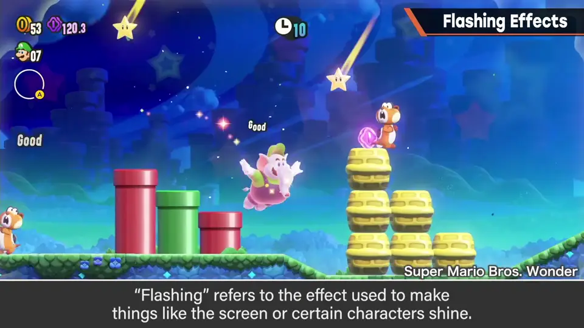
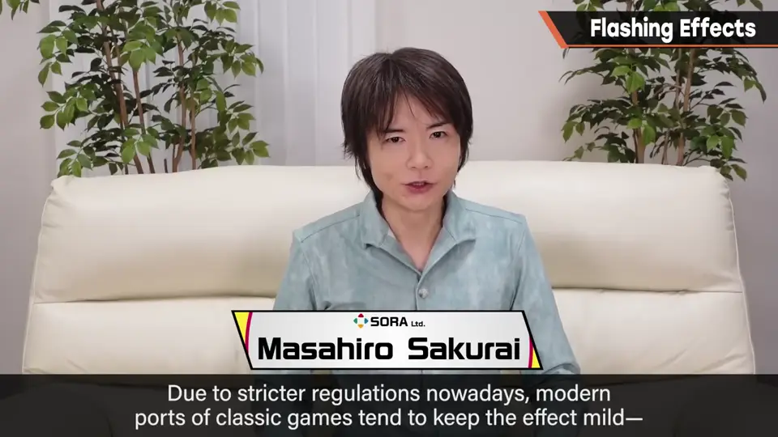
最近规范严格，移植作品也容易变成温和的表现；但以前包括在显像管上显示在内，都闪得厉害。
2. 画面闪光与角色闪光 0:33
- 画面闪光：使用整个画面，和画面震动一样，能用大面积增加手感。
- 角色闪光：能更强地表现该角色产生的状态变化。
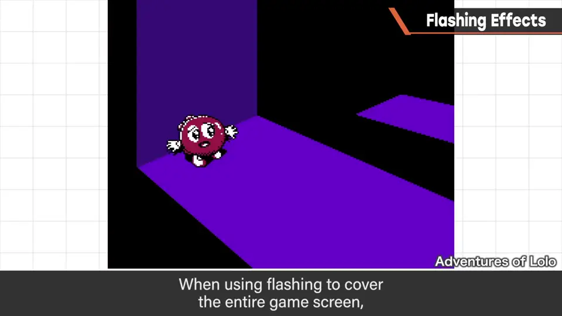
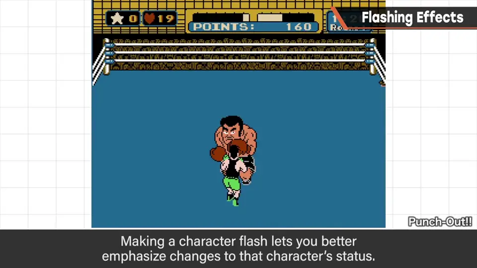
3. 加算的问题 0:46
让角色闪光，现在一般用颜色加算或专用光照。
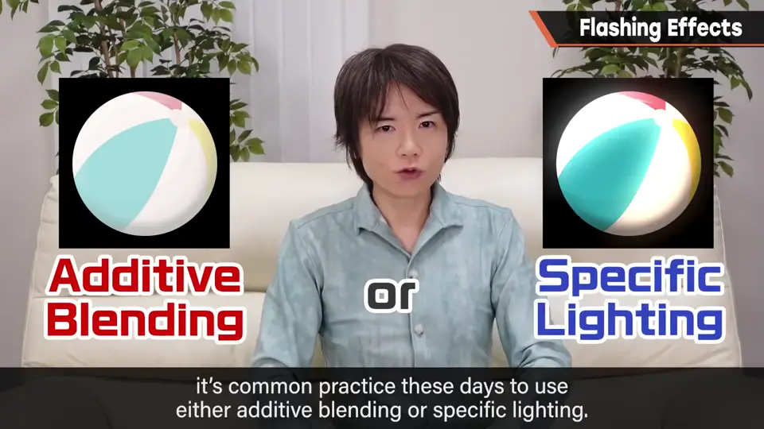
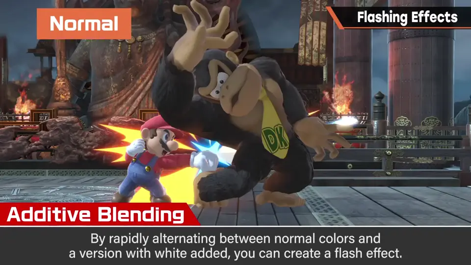
颜色加算是对角色加上特定色调，例如让普通颜色和加了白的颜色交替快速出现来闪烁。
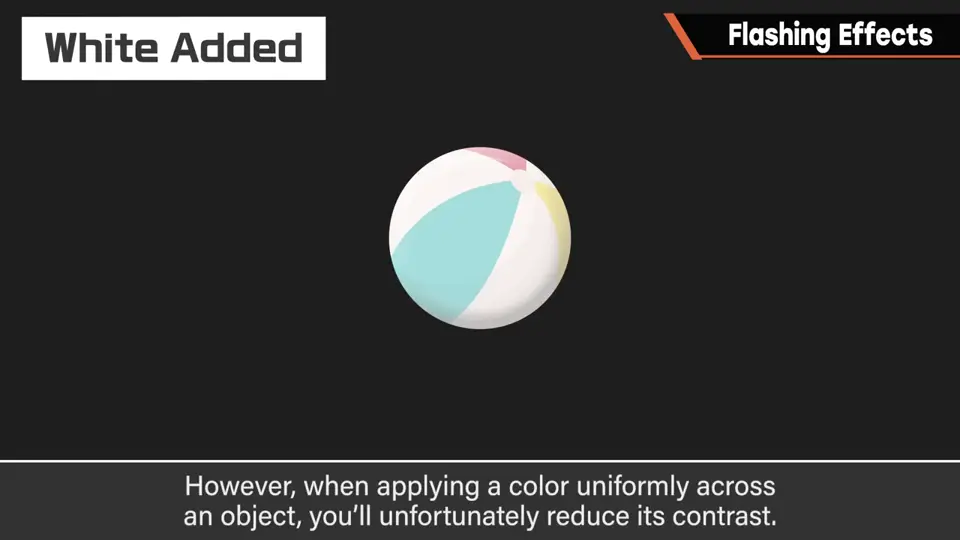
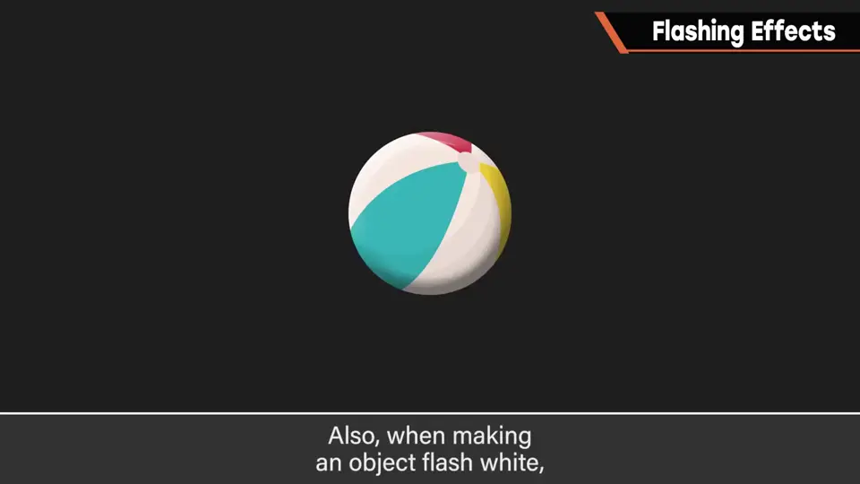
4. 混入暗色与阴影 1:35
对这些问题，以前做的是在闪烁中混入亮的和暗的东西：在亮背景上暗的部分显眼，看得更清楚。
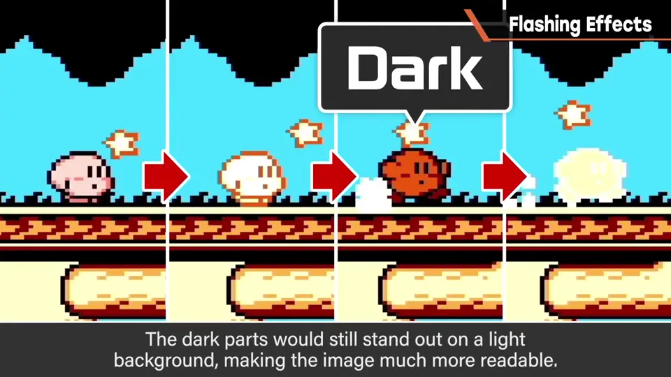
《大乱斗 特别版》尝试的是：命中时等单纯变亮就会融进背景，所以加入阴影，让闪烁有明暗。
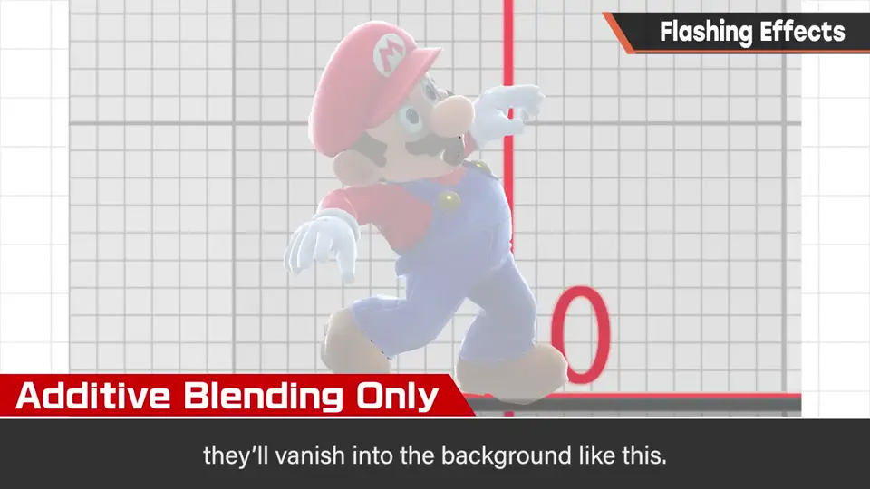
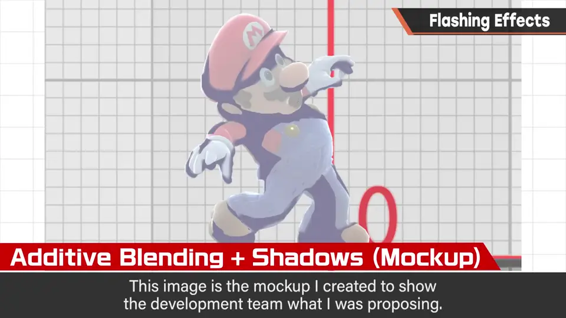
这张图是开发时为提案画的示意图，实装后是这样。
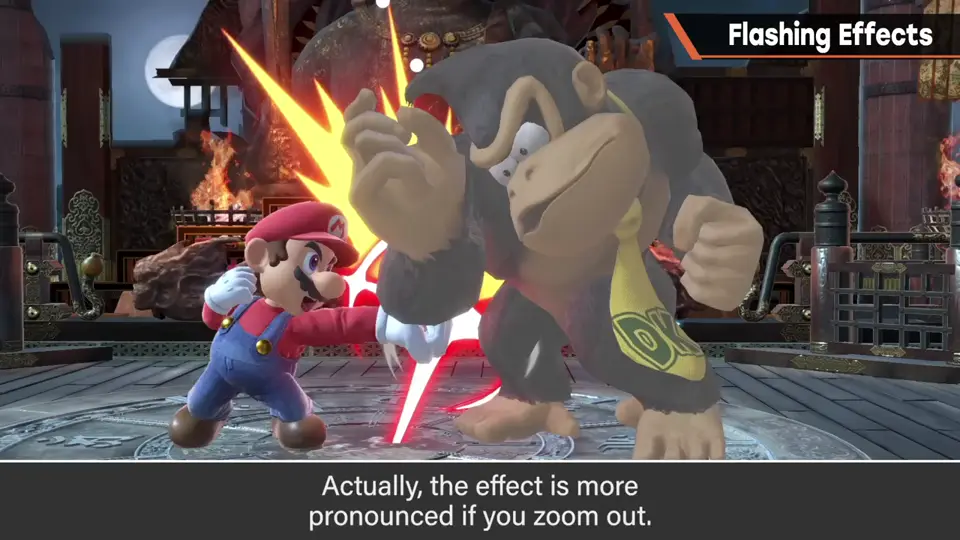
5. 按镜头距离调强度 2:22
其实镜头拉远时反映度会变强。本来近处也想表现，但镜头近时大面积闪烁不好。
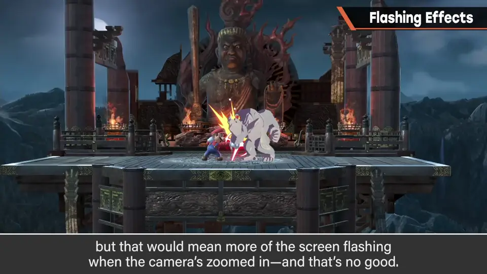
普通闪烁也按镜头距离改变强度。
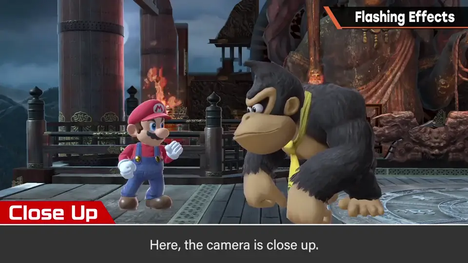
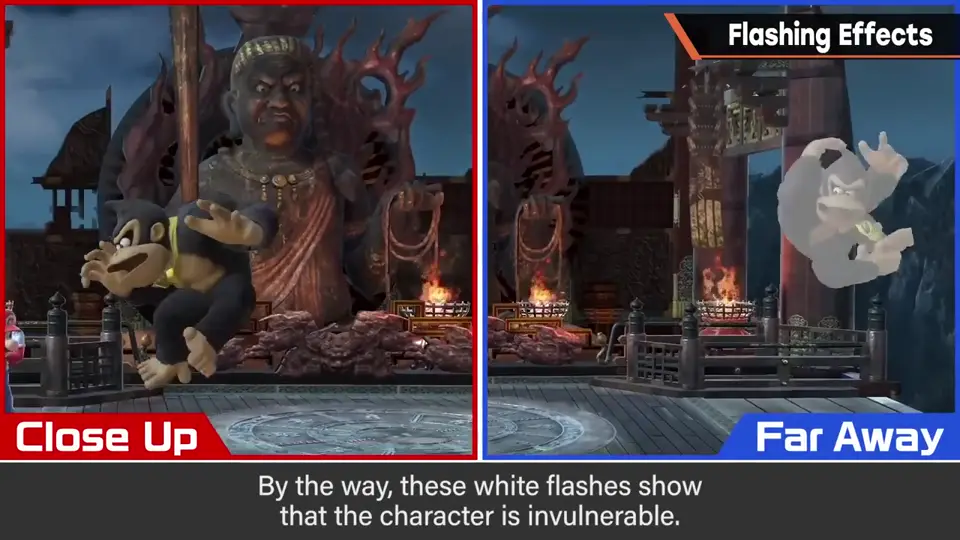
6. 颜色的含义 2:48
- 白色闪烁：表示无敌时间（如起身时的无敌）。
- 黄色闪烁：被投时，表示被投后不能被抓的时间。
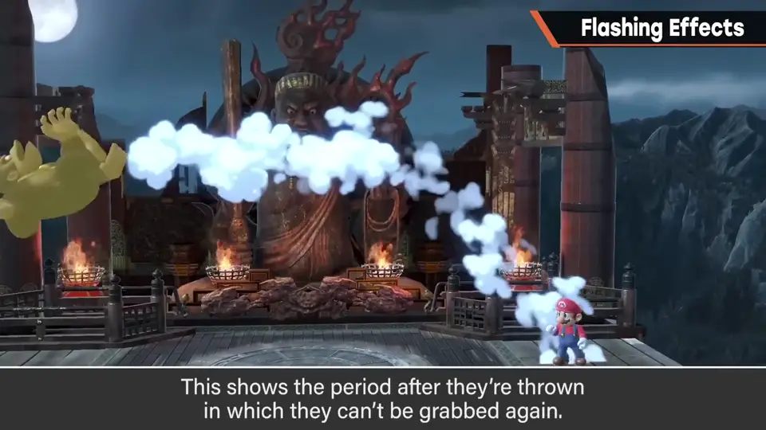
7. 边缘光 3:11
光照表现方面，《特别版》多用类似边缘光的表现：从背后打光、边缘周围亮起来。
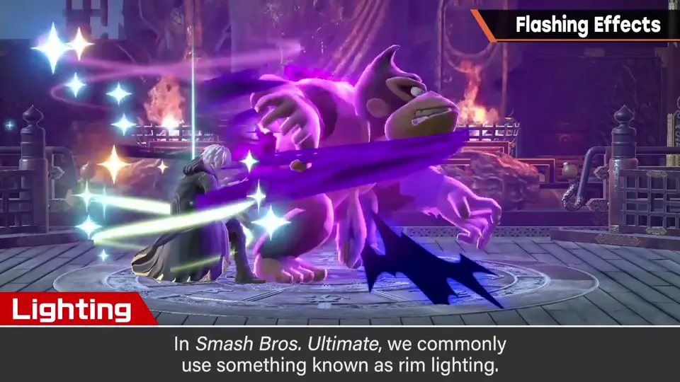
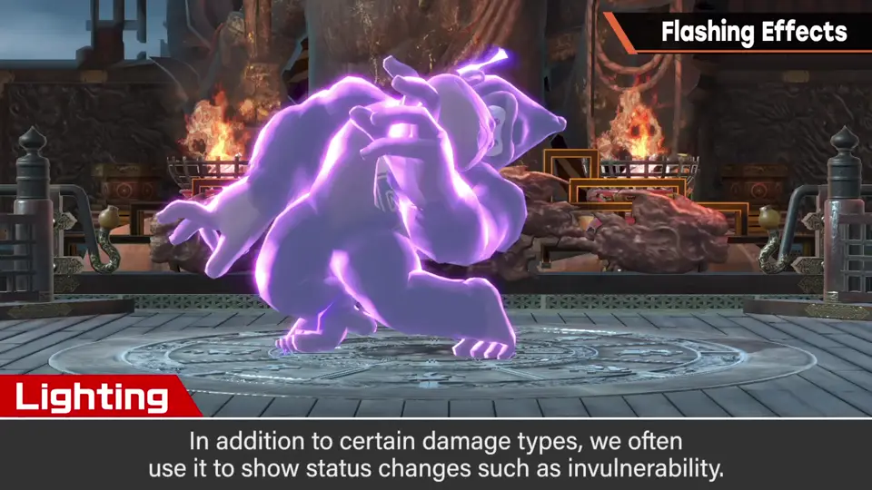
多用于部分受伤，以及无敌等状态变化。
8. 一瞬间的表现 3:50
自测题
1. 画面闪光与角色闪光的作用分别是什么？
画面闪光用大面积增加手感；角色闪光强调状态变化。 0:40
2. 颜色加算闪烁有哪些问题？如何解决？
均匀加色降低对比，白闪在亮画面不显眼；混入暗色、加阴影。 2:00
3. 白色和黄色闪烁分别表示什么？
白：无敌时间；黄：被投后不能被抓的时间。 3:10